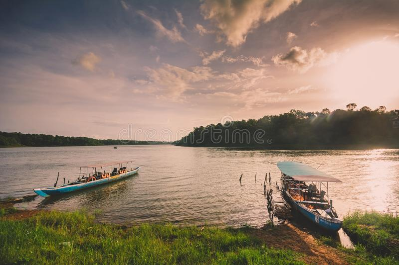
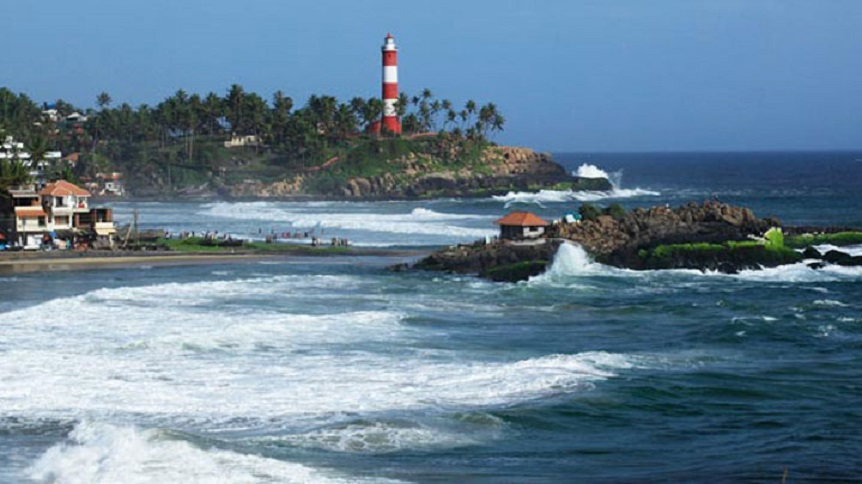

Kollam
Kollam (erstwhile Quilon) is a southern district of Kerala, located 70 km north of the state’s capital Thiruvananthapuram. It is flanked by the Arabian sea on the west, Tamil Nadu on the east, Alapuzha and Pathanamthitta districts on the north and Thiruvananthapuram district on the south. Housing a population of over 2.6 million, Kollam is one of the more densely peopled districts of India. The head quarters of the district administration is centred at Kollam City, the district’s capital. Administratively, the district is composed of two revenue divisions viz. Kollam and Punalur with three taluks each under them. Like the rest of Kerala, Kollam is climactically temperate with a generally sunny weather peaking in heat during April-May. The monsoon falls from June to September. The soil is varyingly loamy, laterite and forest at the coastal regions, mainland and the forest areas respectively. The heart land of Kollam is naturally veined by the Ashtamudi lake, a massive, multi-branched water body, which is also a popular boating attraction for tourists. This and the Kollam canal cutting through the city give Kollam a place of prominence in the waterway systems of the country. A number of islands of varying sizes beautifully spot the vast expanse of the lake. The city is graced by beaches where people go to spend quiet evenings.
Top Destinations

Jatayu’s Earth Centre
Spread across 65 acres of land, Jatayu Earth's Centre is a rock-themed park built to promote mythology and adventure. The world’s largest bird sculpture is the main attraction at Jatayupara Nature Park and is one among the several Kollam famous places. It has a 6D theatre, a digital audio-visual room, cable car and the Siddha Cave Healing Centre. The virtual reality museum here tells the story of Jatayu to visitors. It is also home to umpteen adventure activities including paintball, laser tag, archery, bouldering, rock climbing, air-rifle shooting, zip lining, trekking, rappelling, valley crossing, etc.
Sasthamkotta Lake
Being called the 'Queen of Lakes' is no small distinction, but a visit to Sasthamkotta in Kollam district helps you understand the moniker. The largest freshwater lake in Kerala, it has always been a hotbed for tourist activity. Flanked by magnificent hills on three sides, this area is also home to one among Kerala’s most important pilgrimage sites, the ancient Sastha Temple. One can find friendly monkeys on its premises that are considered divine entities by the locals. Dedicated to both Lord Ganesha and Lord Ayyappa, the monkeys are believed to be the faithful entourage of the ruling deity, the Dharmasastha. People love coming and feeding the beautiful animals, along with soaking in the spiritual ambience of the entire place.
Thangassery Lighthouse
The Thangassery Lighthouse, also known as the Tangasseri Light House, boasts of being the second tallest on the entire coast of Kerala and is thus even one of the most visited lighthouses in the state on this account. Located at Tangasseri in the city of Kollam, it is one of the two lighthouses in the Kollam Metropolitan Area and is presently under the surveillance of the Chennai Directorate General of Lighthouses and Lightships. The majestic tower is clearly visible and distinct, with its painted red and white oblique bands, and looks pretty indeed in all its glory and majesty. The tower has a total height of 41 metres, or 135 feet, and has been operational since the year 1902.